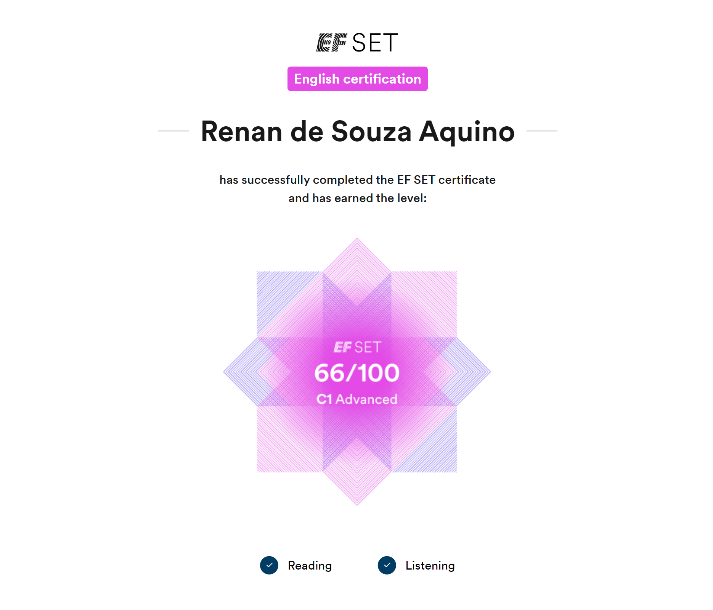

<div class="cursor_dot" #cursorDot></div>
<div class="cursor_outline" #cursor>
    <div class="cursor_image first_image">
        
    </div>
    <div class="cursor_image second_image">
        
    </div>
    <div class="cursor_image third_image">
        
    </div>
    <div class="cursor_image fourth_image">
        
    </div>
    <div class="cursor_image fifth_image">
        
    </div>
</div>